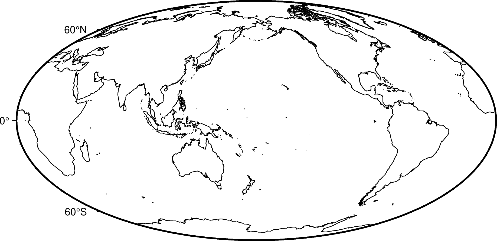
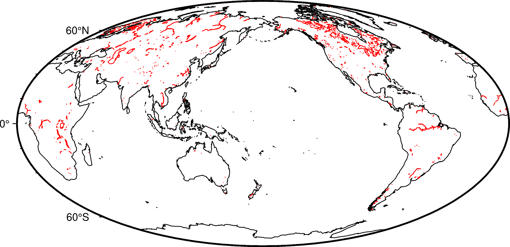
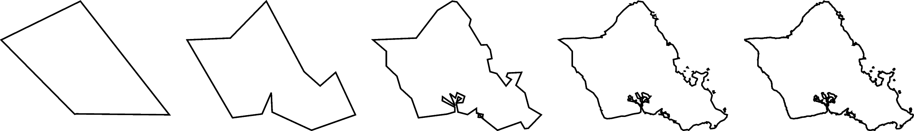
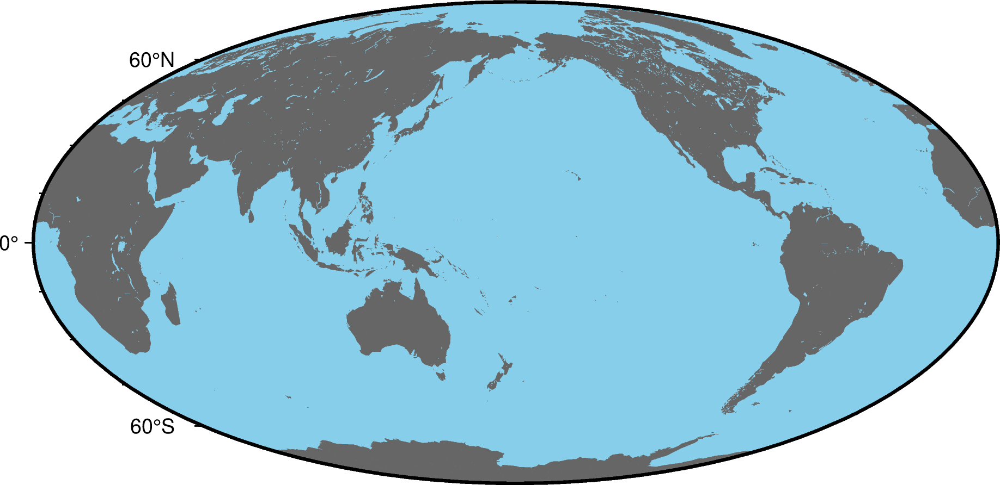

Coastlines and boarders
Plotting coastlines and boarders is handled by coast.
Shorelines
Use the -W parameter to plot only the shorelines:
gmt begin shorelines png
gmt coast -Rg -JW15c -B -W
gmt end show

The shorelines are divided in 4 levels:
coastline
lakeshore
island-in-lake shore
lake-in-island-in-lake shore
You can specify which level you want to plot by appending the level number and a GMT pen configuration to the -W parameter. For example, to plot just the coastlines with 0.5 thickness and black lines:
gmt begin shorelines_levels png
gmt coast -Rg -JW15c -B -W1/0.5p,black
gmt end show

You can specify multiple levels by using the -W parameter more than once:
gmt begin shorelines_levels png
gmt coast -Rg -JW15c -B -W1/0.5p,black -W2/0.5,red
gmt end show

Resolutions
The coastline database comes with 5 resolutions, which can be set using the -D parameter. The resolution drops by 80% between levels:
c: crude
l: low
i: intermediate
h: high
f: full
oahu="-158.3/-157.6/21.2/21.8"
gmt begin shorelines_resolutions png
for res in c, l, i, h, f
do
gmt coast -R${oahu} -JM5c -W1p -D${res} -X5c
done
gmt end show

Land and water
Use the -G and -S parameters to specify a fill color for land and water bodies. The colors can be given by name or hex codes:
gmt begin land_water png
gmt coast -Rg -JW15c -B -G#666666 -Sskyblue
gmt end show
